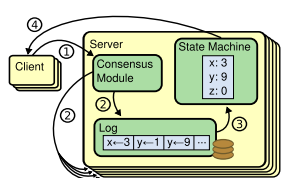

Consensus algorithms allow a collection of machines to work as a coherent group that can survive the failures of some of its members. Because of this, they play a key role in building reliable large-scale software systems. Paxos [15, 16] has dominated the discussion of consensus algorithms over the last decade: most implementations of consensus are based on Paxos or influenced by it, and Paxos has become the primary vehicle used to teach students about consensus.
Unfortunately, Paxos is quite difficult to understand, in spite of numerous attempts to make it more approachable. Furthermore, its architecture requires complex changes to support practical systems. As a result, both system builders and students struggle with Paxos. After struggling with Paxos ourselves, we set out to find a new consensus algorithm that could provide a better foundation for system building and education. Our approach was unusual in that our primary goal was understandability: could we define a consensus algorithm for practical systems and describe it in a way that is signifi- cantly easier to learn than Paxos? Furthermore, we wanted the algorithm to facilitate the development of intuitions that are essential for system builders. It was important not just for the algorithm to work, but for it to be obvious why it works
